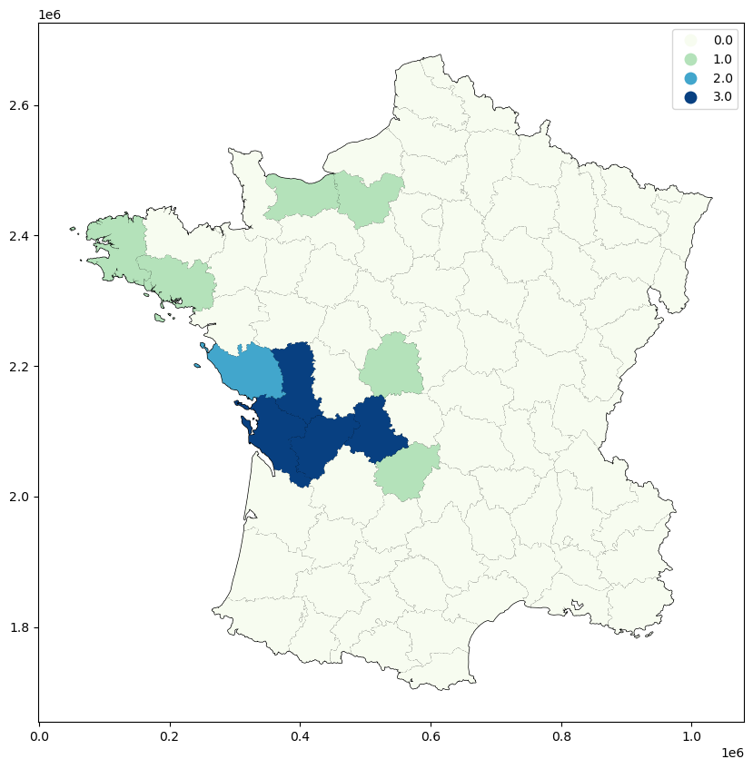
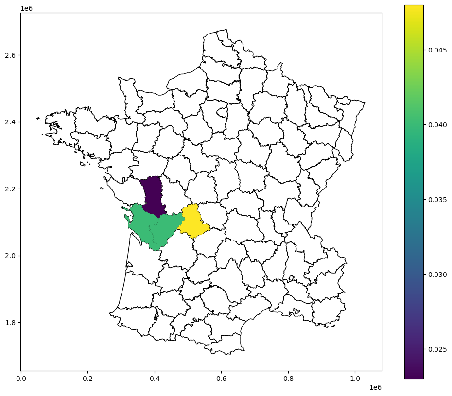
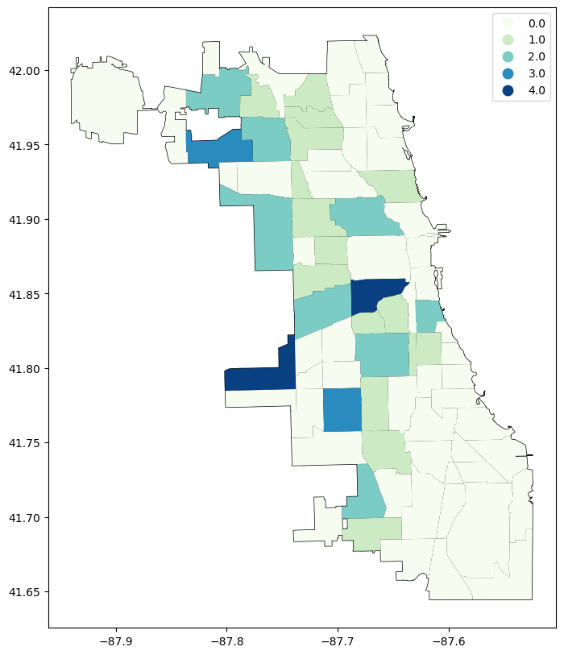
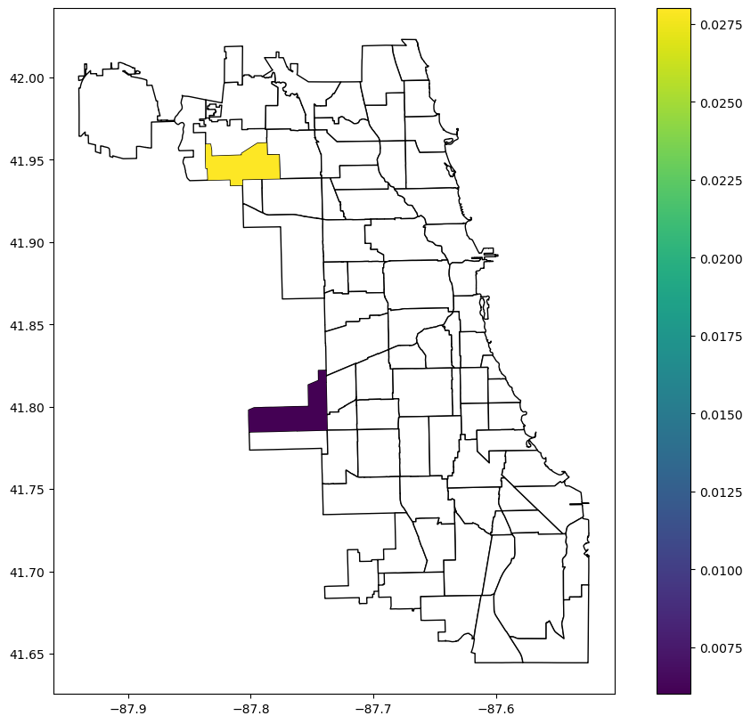
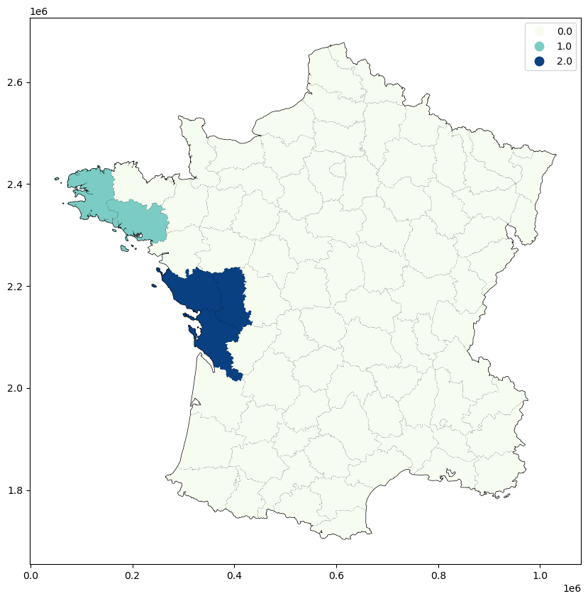
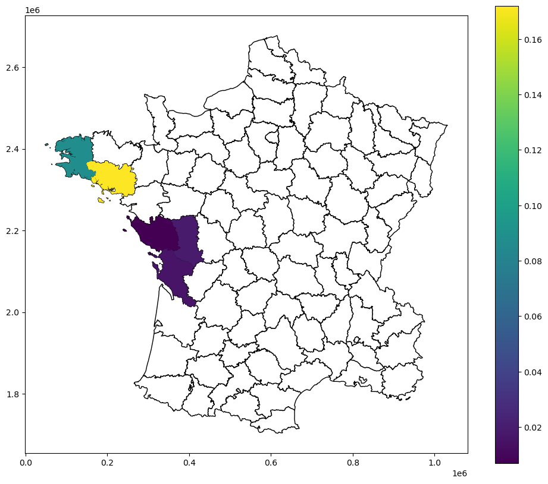

This page was generated from build/.jupyter_cache/executed/3140ccd1598b820d4f816a0bf4d38019/base.ipynb.
Interactive online version:

[1]:
import geopandas as gpd
import libpysal
[2]:
guerry = libpysal.examples.load_example("Guerry")
guerry_ds = gpd.read_file(guerry.get_path("guerry.shp"))
guerry_ds["SELECTED"] = 0
guerry_ds.loc[(guerry_ds["Donatns"] > 10997), "SELECTED"] = 1
[3]:
w = libpysal.weights.Queen.from_dataframe(guerry_ds, use_index=False)
[4]:
from esda.join_counts_local import Join_Counts_Local
LJC_uni = Join_Counts_Local(connectivity=w).fit(guerry_ds["SELECTED"])
[5]:
LJC_uni.LJC
[5]:
array([0., 0., 0., 0., 0., 0., 0., 0., 0., 0., 0., 0., 1., 0., 3., 3., 0.,
1., 0., 0., 0., 0., 0., 0., 1., 0., 1., 0., 0., 0., 0., 0., 0., 1.,
0., 0., 0., 0., 0., 0., 0., 0., 0., 0., 0., 0., 0., 0., 0., 0., 0.,
0., 0., 1., 0., 0., 0., 0., 0., 0., 0., 0., 0., 0., 0., 0., 0., 0.,
0., 0., 0., 0., 0., 0., 3., 0., 0., 0., 0., 0., 2., 0., 3., 0., 0.])
[6]:
LJC_uni.p_sim
[6]:
array([ nan, nan, nan, nan, nan, nan, nan, nan, nan,
nan, nan, nan, 0.423, nan, 0.04 , 0.04 , nan, 0.322,
nan, nan, nan, nan, nan, nan, 0.316, nan, 0.317,
nan, nan, nan, nan, nan, nan, 0.325, nan, nan,
nan, nan, nan, nan, nan, nan, nan, nan, nan,
nan, nan, nan, nan, nan, nan, nan, nan, 0.454,
nan, nan, nan, nan, nan, nan, nan, nan, nan,
nan, nan, nan, nan, nan, nan, nan, nan, nan,
nan, nan, 0.023, nan, nan, nan, nan, nan, 0.129,
nan, 0.048, nan, nan], dtype=float32)
[7]:
guerry_ds["LJC_UNI"] = LJC_uni.LJC
guerry_ds["LJC_UNI_p_sim"] = LJC_uni.p_sim
[8]:
import matplotlib.pyplot as plt
fig, ax = plt.subplots(figsize=(12, 10), subplot_kw={"aspect": "equal"})
guerry_ds.plot(color="white", edgecolor="black", ax=ax)
guerry_ds.plot(column="LJC_UNI", categorical=True, cmap="GnBu", legend=True, ax=ax)
[8]:
<Axes: >

[9]:
import numpy
guerry_ds["LJC_UNI_p_sim_sig"] = numpy.nan
guerry_ds.loc[(guerry_ds["LJC_UNI_p_sim"] <= 0.05), "LJC_UNI_p_sim_sig"] = guerry_ds[
"LJC_UNI_p_sim"
]
import matplotlib.pyplot as plt
fig, ax = plt.subplots(figsize=(12, 10), subplot_kw={"aspect": "equal"})
guerry_ds.plot(color="white", edgecolor="black", ax=ax)
guerry_ds.plot(column="LJC_UNI_p_sim_sig", legend=True, ax=ax)
[9]:
<Axes: >

[10]:
import geopandas as gpd
import libpysal
commpop = gpd.read_file(
"https://github.com/jeffcsauer/GSOC2020/raw/master/validation/data/commpop.gpkg"
)
[11]:
w = libpysal.weights.Queen.from_dataframe(commpop, use_index=False)
[12]:
from esda.join_counts_local_bv import Join_Counts_Local_BV
LJC_BV_Case1 = Join_Counts_Local_BV(connectivity=w).fit(
commpop["popneg"], commpop["popplus"], case="BJC"
)
[13]:
commpop["LJC_BV_Case1"] = LJC_BV_Case1.LJC
commpop["LJC_BV_Case1_p_sim"] = LJC_BV_Case1.p_sim
[14]:
fig, ax = plt.subplots(figsize=(12, 10), subplot_kw={"aspect": "equal"})
commpop.plot(color="white", edgecolor="black", ax=ax)
commpop.plot(column="LJC_BV_Case1", cmap="GnBu", categorical=True, legend=True, ax=ax)
[14]:
<Axes: >

[15]:
commpop["LJC_BV_Case1_p_sim_sig"] = numpy.nan
commpop.loc[(commpop["LJC_BV_Case1_p_sim"] <= 0.05), "LJC_BV_Case1_p_sim_sig"] = (
commpop["LJC_BV_Case1_p_sim"]
)
fig, ax = plt.subplots(figsize=(12, 10), subplot_kw={"aspect": "equal"})
commpop.plot(color="white", edgecolor="black", ax=ax)
commpop.plot(column="LJC_BV_Case1_p_sim_sig", legend=True, ax=ax)
[15]:
<Axes: >

[16]:
guerry = libpysal.examples.load_example("Guerry")
guerry_ds = gpd.read_file(guerry.get_path("guerry.shp"))
guerry_ds["infq5"] = 0
guerry_ds["donq5"] = 0
guerry_ds.loc[(guerry_ds["Infants"] > 23574), "infq5"] = 1
guerry_ds.loc[(guerry_ds["Donatns"] > 10973), "donq5"] = 1
[17]:
w = libpysal.weights.Queen.from_dataframe(guerry_ds, use_index=False)
[18]:
LJC_BV_Case2 = Join_Counts_Local_BV(connectivity=w).fit(
guerry_ds["infq5"], guerry_ds["donq5"], case="CLC"
)
[19]:
guerry_ds["LJC_BV_Case2"] = LJC_BV_Case2.LJC
guerry_ds["LJC_BV_Case2_p_sim"] = LJC_BV_Case2.p_sim
[20]:
fig, ax = plt.subplots(figsize=(12, 10), subplot_kw={"aspect": "equal"})
guerry_ds.plot(color="white", edgecolor="black", ax=ax)
guerry_ds.plot(column="LJC_BV_Case2", cmap="GnBu", categorical=True, legend=True, ax=ax)
[20]:
<Axes: >

[21]:
fig, ax = plt.subplots(figsize=(12, 10), subplot_kw={"aspect": "equal"})
guerry_ds.plot(color="white", edgecolor="black", ax=ax)
guerry_ds.plot(column="LJC_BV_Case2_p_sim", legend=True, ax=ax)
[21]:
<Axes: >

[22]:
guerry = libpysal.examples.load_example("Guerry")
guerry_ds = gpd.read_file(guerry.get_path("guerry.shp"))
guerry_ds["infq5"] = 0
guerry_ds["donq5"] = 0
guerry_ds["suic5"] = 0
guerry_ds.loc[(guerry_ds["Infants"] > 23574), "infq5"] = 1
guerry_ds.loc[(guerry_ds["Donatns"] > 10973), "donq5"] = 1
guerry_ds.loc[(guerry_ds["Suicids"] > 55564), "suic5"] = 1
[23]:
w = libpysal.weights.Queen.from_dataframe(guerry_ds, use_index=False)
[24]:
from esda.join_counts_local_mv import Join_Counts_Local_MV
LJC_MV = Join_Counts_Local_MV(connectivity=w).fit(
[guerry_ds["infq5"], guerry_ds["donq5"], guerry_ds["suic5"]]
)
[25]:
LJC_MV.LJC
[25]:
array([0., 0., 0., 0., 0., 0., 0., 0., 0., 0., 0., 0., 0., 0., 0., 0., 0.,
0., 0., 0., 0., 0., 0., 0., 0., 0., 0., 0., 0., 0., 0., 0., 0., 0.,
0., 0., 0., 0., 0., 0., 0., 0., 0., 0., 0., 0., 0., 0., 0., 0., 0.,
0., 0., 0., 0., 0., 0., 0., 0., 0., 0., 0., 0., 0., 0., 0., 0., 0.,
0., 0., 0., 0., 0., 0., 0., 0., 0., 0., 0., 0., 0., 0., 0., 0., 0.])
[26]:
LJC_MV.p_sim
[26]:
array([nan, nan, nan, nan, nan, nan, nan, nan, nan, nan, nan, nan, nan,
nan, nan, nan, nan, nan, nan, nan, nan, nan, nan, nan, nan, nan,
nan, nan, nan, nan, nan, nan, nan, nan, nan, nan, nan, nan, nan,
nan, nan, nan, nan, nan, nan, nan, nan, nan, nan, nan, nan, nan,
nan, nan, nan, nan, nan, nan, nan, nan, nan, nan, nan, nan, nan,
nan, nan, nan, nan, nan, nan, nan, nan, nan, nan, nan, nan, nan,
nan, nan, nan, nan, nan, nan, nan], dtype=float32)